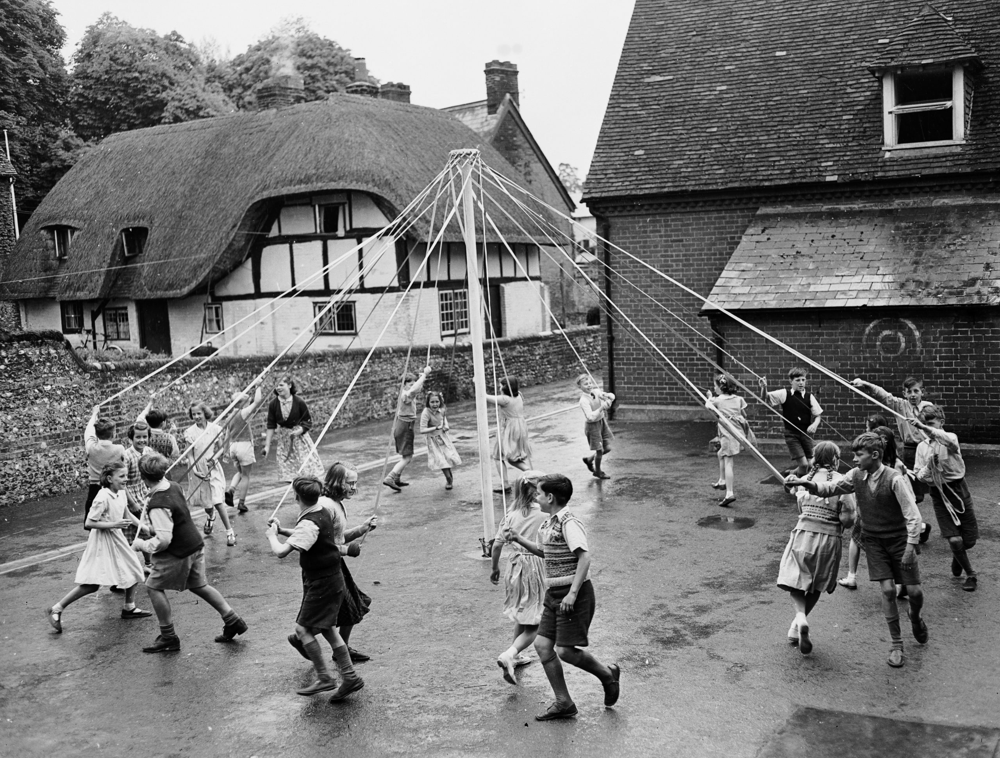
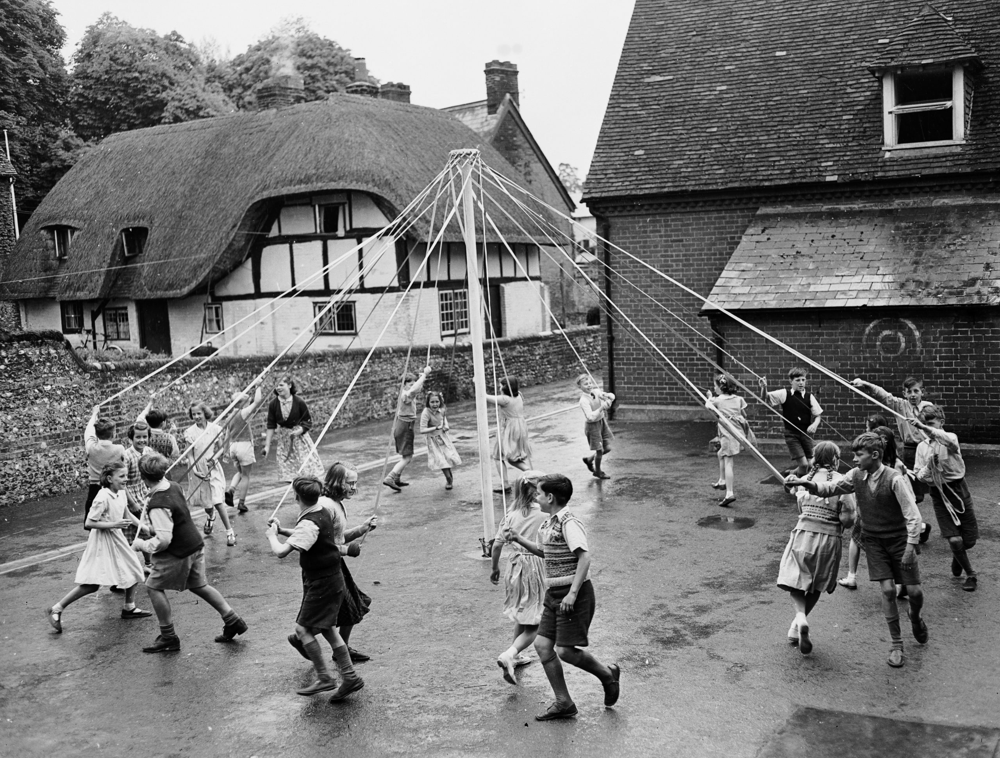
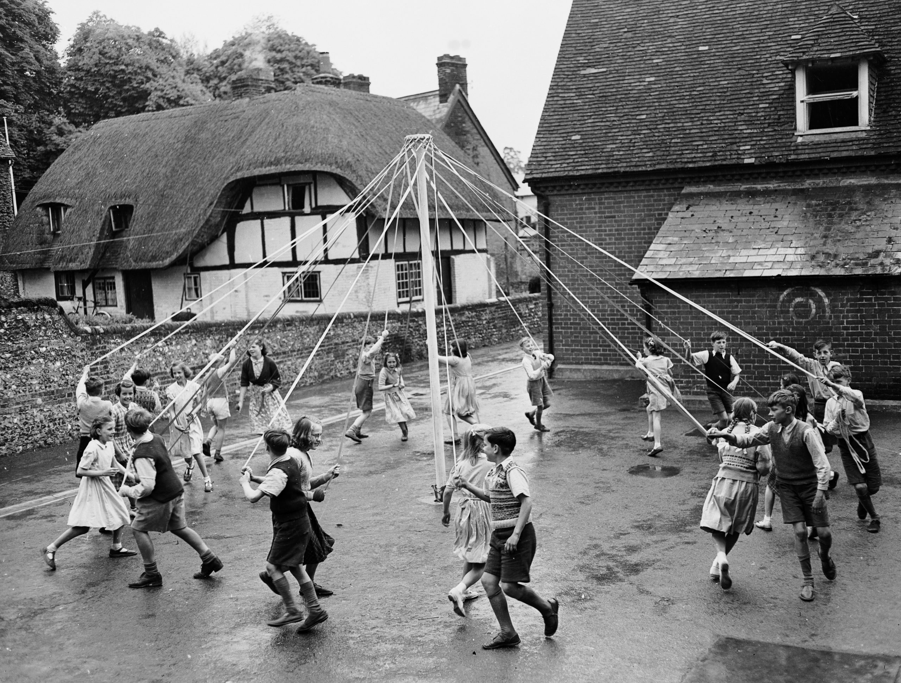

the-Sxty-river
The only material technologies that routinely survive collapse are small-scale agriculture and small-scale metallurgy - Samo Burja 'Why Civilizations Collapse'
The insipration of this project from I travelled to the north London, when I saw a vallery located in the bottom of a hill, which scence let me think about the game I played in my childhood named 'strongHold', in which I build a castal and also the cilivization inside, because this place is not so far away for London, the modern city, but I didn't have this feeling in London. So I begin thinking about why, and I also I began to trace, to invesitagte.
To beginning, I read a book that introduced some cases of Sigmund Freud. I learnt I need to look through the surface to drag the hidden and deep side, then to open the knot, which the knot is the only monment I feel the culture of England is saw the vallery but not the royal ceromony in London trouist attractions and the new modern skyscrper in island of dog. And the elements in 'stronghold' direct me to begin this invesitagte, for example, the gallows and the maypole in the game to rising work effiency and the happniess rate respectively. Related to life in there, I also go the some mouements and also monuments in the oppiste means.
 

 In the monument of oppoiste, I went the execution dock, where was used for hanging crimals and warnning public, and thus I did a lot of researches related it, such as ducking stool in other places, wanting to know why those actions existed and why they are disappear. Looking back, crimals who died through it crime inclues act rude for royal family, and witchcraft, the latter is encouraged in today somehow. But situating myself in the that time, I would think those thing isn't right, because if I do that, I may get died. But approximately two hunderd years, those actions are no longer defined as crimal, even though the country is still controlled by those people, and those landmark was ignored, but other mouements for celebration became trouist attraction. Everyting is like planned, what virture is like, and birtral, and everything can be modified. It's noticable that it is changed not by the time, but by what the goal they want to archive. In the time the execution dock functioning, it's the sailling era, when people in the Birtish empire sail to the earth, to explore the human cilivization and in the meantime to trade with the whole earth. So they need mantain the stability on the ocean. As a result, the gllows are built on the dock where was most busy, and in most case, it was used for executing crimals on sea. And also the ducking stool, people are killed there are women, because those women talk too much, it actually reasonable in that time the society is govern by males.
In the monument of oppoiste, I went the execution dock, where was used for hanging crimals and warnning public, and thus I did a lot of researches related it, such as ducking stool in other places, wanting to know why those actions existed and why they are disappear. Looking back, crimals who died through it crime inclues act rude for royal family, and witchcraft, the latter is encouraged in today somehow. But situating myself in the that time, I would think those thing isn't right, because if I do that, I may get died. But approximately two hunderd years, those actions are no longer defined as crimal, even though the country is still controlled by those people, and those landmark was ignored, but other mouements for celebration became trouist attraction. Everyting is like planned, what virture is like, and birtral, and everything can be modified. It's noticable that it is changed not by the time, but by what the goal they want to archive. In the time the execution dock functioning, it's the sailling era, when people in the Birtish empire sail to the earth, to explore the human cilivization and in the meantime to trade with the whole earth. So they need mantain the stability on the ocean. As a result, the gllows are built on the dock where was most busy, and in most case, it was used for executing crimals on sea. And also the ducking stool, people are killed there are women, because those women talk too much, it actually reasonable in that time the society is govern by males.
 Every strong cilivization would do their dest or worest to keep the socity run as their way, to construct the vibe. I wasn't admire this civilzation, which I spent a lot to get there, which was the most powerful cilivization in this world, is falling, until I can't feel the culture, the vide they constructed in most of time, which I mentioned before the only is once I saw the vallery in the bottom of a hall and once I sew the space between two historical building, builing is white, those space is black, used for people passing, now for smoking. And I also admire I'm hard to find the culture, the vide from a great cilivization.
Every strong cilivization would do their dest or worest to keep the socity run as their way, to construct the vibe. I wasn't admire this civilzation, which I spent a lot to get there, which was the most powerful cilivization in this world, is falling, until I can't feel the culture, the vide they constructed in most of time, which I mentioned before the only is once I saw the vallery in the bottom of a hall and once I sew the space between two historical building, builing is white, those space is black, used for people passing, now for smoking. And I also admire I'm hard to find the culture, the vide from a great cilivization.
 I want to make something remind me keep searching, don't obesses myself in what I see, because the things I can see is what someone want me to see, but if you don't want to be the scrfice of the switching of their goals, it's better to not see those things. Therefore, I want to make a physical work represent something hindden, something can't be seen easily, or something can only be seen after death. The switching of time becomes the the switching between the hanging body under the wooden gllows on the river and the body drived by the ferryman on the Styx river, where is full of black, dark, but quite, no human cilivization, and the person only need to follow the ferryman and go to the rebrith.
I want to make something remind me keep searching, don't obesses myself in what I see, because the things I can see is what someone want me to see, but if you don't want to be the scrfice of the switching of their goals, it's better to not see those things. Therefore, I want to make a physical work represent something hindden, something can't be seen easily, or something can only be seen after death. The switching of time becomes the the switching between the hanging body under the wooden gllows on the river and the body drived by the ferryman on the Styx river, where is full of black, dark, but quite, no human cilivization, and the person only need to follow the ferryman and go to the rebrith.
 Those actions are like the ritual ceromony in old group, to use the life of little amounts of people to exchange the stability of the rest of the group. I would not judge if it is right or not becauese the historical background. Moreover, I believe our society can't escape this rule even we called today as 'modern society'. What my project wants to say is accpect it if I can't escape the destiny to be the one, the one be killed, which it's more terrible to live with this kind of fear. Just like there is a theatre 'The crucible' directed by Lyndsey Turner, The man said before his is exeuted
Those actions are like the ritual ceromony in old group, to use the life of little amounts of people to exchange the stability of the rest of the group. I would not judge if it is right or not becauese the historical background. Moreover, I believe our society can't escape this rule even we called today as 'modern society'. What my project wants to say is accpect it if I can't escape the destiny to be the one, the one be killed, which it's more terrible to live with this kind of fear. Just like there is a theatre 'The crucible' directed by Lyndsey Turner, The man said before his is exeuted
'Because it is my name! Because I cannot have another in my life. Because I am not worth the dust on the feet of them that hang! How may I live without my name?
I have given you my soul, leave me my name!'
What comfort me is I like the myth of Greek, and have read the book 'The ferryman', wrote by Claire McFall, in my teenage, and I facinate by the accompay in a small ship and float in a unknow water, black, misty, but you know if you hold your believe, and the ferryman will bring you to the rebrith, instead of left in the water.
The whole warable like a sculpture can be wear on the back, and a pyramid shape design on the chest, inspriated from the head of sail ship, and the whole thing supported and connected by the carbon - fibre rod, and a wooden frame used as the base, in the center.
Because most attractive thing in this warable is the wing shaped fabric, I want to realize that using little power move the heavy fabric, just like people open the sail of sail ship. Due I read some bookes about the structure of ship, and designed the pullry for pull wires. Finally to control all the wire on the hand of the wearer, or add a electrion to pull the wire and set it on the hand of the wearer. But I didn't realize this design, both because I think the tension of pulling pullry is interesting if the wearer can pull by their own hand, and I didn't find a better machinical way to pull.
And the scence I want to reconstruct the execution scence, but the wires used for hanging became the wires used for sailing, and the gllows becomes the mast, the river became the Styx river, and the person goes to rebrith.
 This is how people wears like.
The water projected on the aryclic is using particle system, to simulate the water movement of the river. And a web cam is set on the bottom of the aryclic, to capture the black fabric on the back, if the fabric move, there would be more bright pixel captured. Thus, the ship is moving, and the water surround the ship moves, and the particle system also move to lines.
This is how people wears like.
The water projected on the aryclic is using particle system, to simulate the water movement of the river. And a web cam is set on the bottom of the aryclic, to capture the black fabric on the back, if the fabric move, there would be more bright pixel captured. Thus, the ship is moving, and the water surround the ship moves, and the particle system also move to lines.


The insipration of this project from I travelled to the north London, when I saw a vallery located in the bottom of a hill, which scence let me think about the game I played in my childhood named 'strongHold', in which I build a castal and also the cilivization inside, because this place is not so far away for London, the modern city, but I didn't have this feeling in London. So I begin thinking about why, and I also I began to trace, to invesitagte.
To beginning, I read a book that introduced some cases of Sigmund Freud. I learnt I need to look through the surface to drag the hidden and deep side, then to open the knot, which the knot is the only monment I feel the culture of England is saw the vallery but not the royal ceromony in London trouist attractions and the new modern skyscrper in island of dog. And the elements in 'stronghold' direct me to begin this invesitagte, for example, the gallows and the maypole in the game to rising work effiency and the happniess rate respectively. Related to life in there, I also go the some mouements and also monuments in the oppiste means.

'Because it is my name! Because I cannot have another in my life. Because I am not worth the dust on the feet of them that hang! How may I live without my name?
I have given you my soul, leave me my name!'